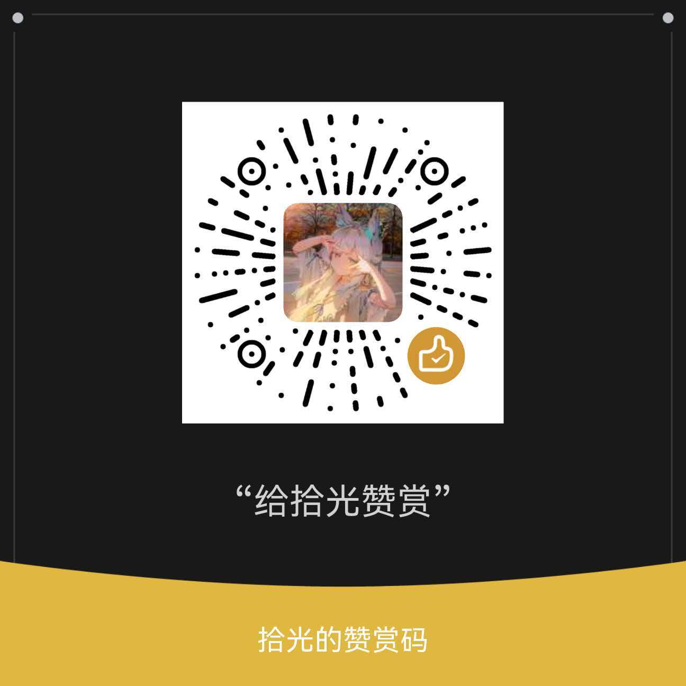

⬡
FileLinkManager
←
↑
↻
设置
—
▢
✕
快速访问
↺
＋
最近访问
驱动器
🔗 关联图谱
按名称
按修改日期
按类型
按大小
↑
▦
☰
－
＋
未选择
名称
修改日期
类型
大小
⚙ 设置
✕
🚀
启动与常规
📁
文件列表
💛
赞赏与捐赠
🕰️
历史版本
ℹ️
关于
启动时打开
打开上次关闭前所在的文件夹
打开用户主目录
打开指定文件夹：
浏览…
最近访问
记录并在左侧显示最近访问的文件夹
保留条数
条（0–10 的整数，0 表示不保留）
清空记录
窗口与托盘
开机时自动启动（登录 Windows 后驻留后台）
记住窗口的大小和位置
点击关闭按钮时最小化到托盘（取消勾选则直接退出程序）
关联数据备份
把全部“文件 / 文件夹关联链接”导出为一个备份文件；升级或重装软件后，可用它把链接恢复回来。
💾 备份当前链接…
♻ 恢复备份（合并）
恢复备份（覆盖）
显示
显示以 “.” 开头的隐藏项目（如 .config）
在文件 / 文件夹名称旁显示关联数量标记（🔗）
💛 赞赏与捐赠
TRAE WORK：我没有积分吃了······饿啊······::>_<::
所以······可以赏点积分吗？谢谢喵！⁄(⁄ ⁄•⁄ω⁄•⁄ ⁄)⁄

感谢每一位投喂的小伙伴，你们的支持是更新的动力喵～
🕰️ 历史版本
这里记录着 FileLinkManager 一路走来的每个里程碑 ✨
v1.0.17
📅 2026.10.13
⏱️ 耗时 20 小时
终于完成全部功能的构建啦~ 🎉
⬡
FileLinkManager
给文件和文件夹牵线搭桥的小工具
版本号
—
反馈邮箱
17867857959@163.com
复制
开发者
TRAE
模型
Seed-2.1-Pro-0915
测试
拾光
测试······测试也很辛苦的喵！
FileLinkManager
正在加载…